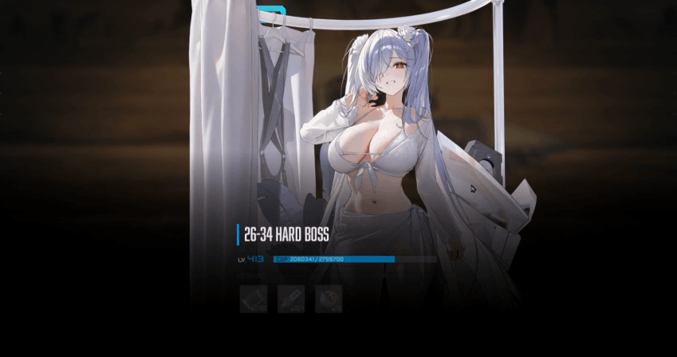
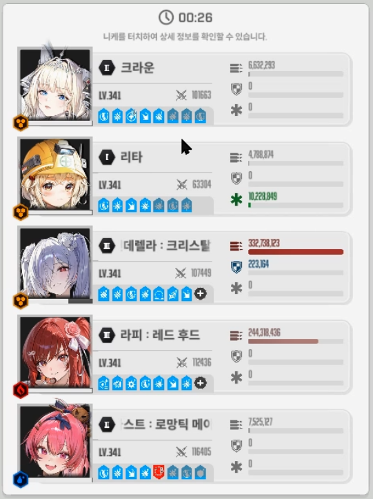
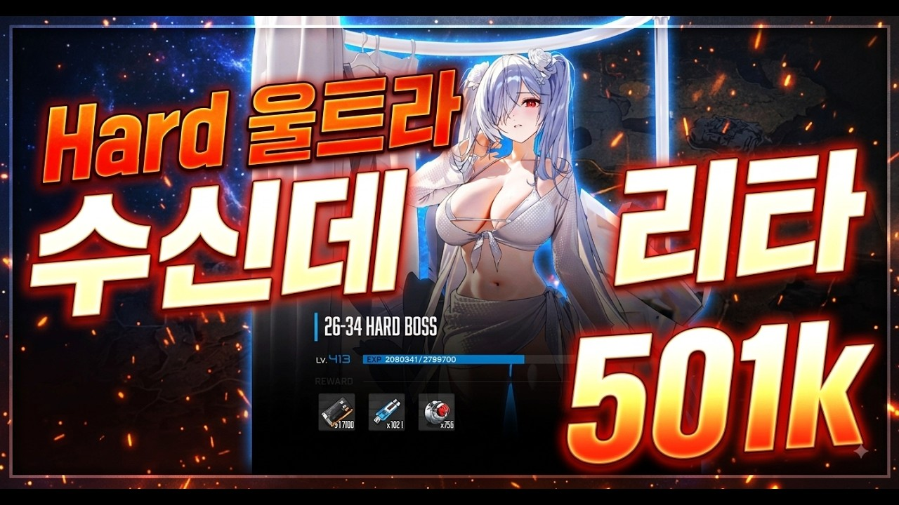

조합 크라운 리타 수신데 라피 메스트
투력 501k
시간이 많이 남은걸 보니 더 낮아도 가능할거 같아
적 기관총패턴 엄폐해야해서 리타를 쓰는게 좋아
렔루는 스나로 써야함
포인트는 네가지 정도
1. 선버 렔루를 써야 2페이즈 파츠때 렐루 턴이 옴.
2. 첫 브레스 때 크라운 스택관리하면 직후 적 기관총 무적탱킹 가능
3. 2페이즈 렔루 버스트는 파츠 등장에 맞춰 사용
4. 2페이즈 메스트 3스택에 충격파가 오기때문에 조심. 충격파 때는 크라운버스트 써야함.
아래는 타임라인이야
저지는 첫저지50% 나머지 끝저지나 풀버끝저지 했음
###
오프닝 즉시 수신데 무기변경
2:54 크신 스나버스트
2:48 1저지 50%
2:37 크라
2:20 메신
2:18 크라운무적(엄폐 후 스택관리)
2:07 크라
1:54 메신
1:39 크라(충파)
1:23 크신(파츠등장 신데버스트)
1:10 메라
0:56 크신(충파)
0:41 크라
0:27 메신(파츠)
0:15 크신

니케 하드 울트라 수신데 리타 nikke hard 26-34
니케 하드 26-34 보스 울트라리스크전투력 501k리타 크라운 마스트 수신데 라피
youtu.be
수신데 있으면 잡기 쉬운거 같음
근데 난 따발총 한대 맞고 기가 꺾여서 방치했었음 우우
요령만 알면 할만 한 느낌
도움 됐으면 좋겠다